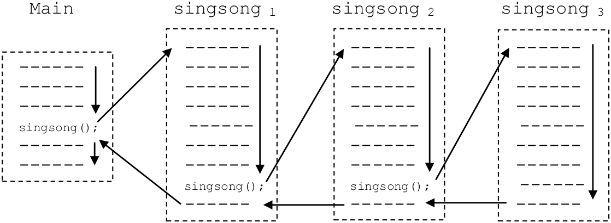
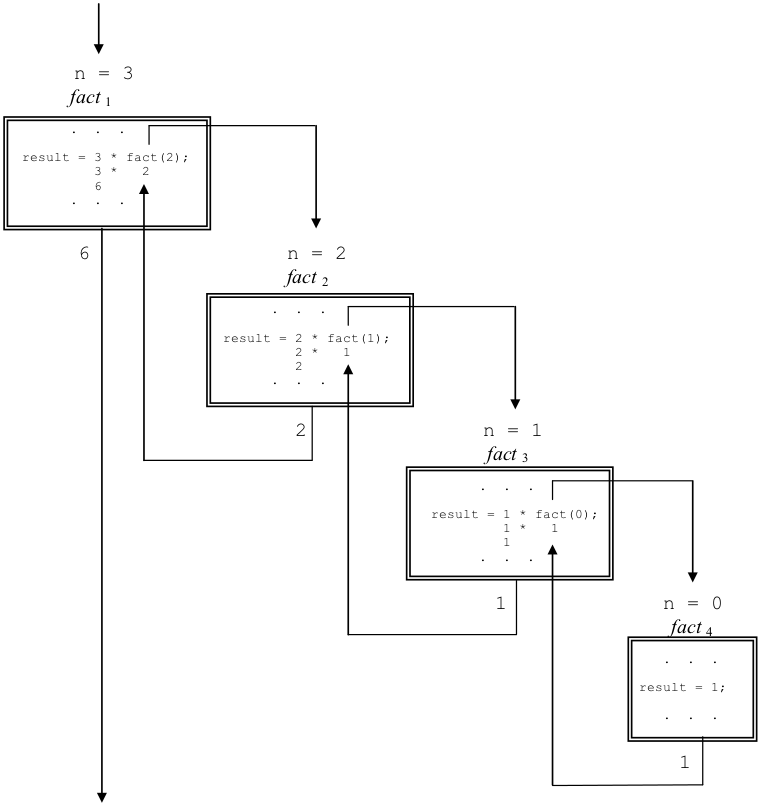

This section is concerned with the topic of recursion. Recursion is a type of repetition that is implemented when a subprogram calls itself. When a recursive call takes place, control is passed to what appears to be a brand new copy of the subprogram – complete with its own set of parameters and local variables. This copy of the subprogram may, in turn, call another copy of the subprogram. That copy may call another copy, and so on and so forth. Eventually, these recursive calls must terminate and return control to the original calling program.
We will begin our study of recursion by turning to a familiar example, the “beer” program, first introduced in and later rewritten to use a function in . presents a recursive version of beer. At first glance you might think that this program is an identical copy of the program of . There are, however, two major differences between the two. First, instead of a “for” loop in the singsong function, this program has an “if” statement. Also, just before the physical end of the function definition, immediately before the “}”, the version of singsong in calls another copy of singsong, passing it the number of beers that remain on the wall.
Beer – the tail recursive version
Execution of the program proceeds in the following way. First, the main program queries the user for the number of bottles. The response is stored in count. Singsong is then called and passed the value of count. Since this is the first call to singsong, let’s refer to this version of the procedure as singsong1. Also, for the sake of simplicity, let’s assume that the user entered “2” as the number of bottles.
Thus, singsong1 begins with two beers. It compares its number of beers to zero. Since two is greater than zero, the computer executes the statements in the “then” block. The first five statements of the block print the following three lines:
Singsong1 then subtracts one from beers giving it a value of one. Next, the function prints:
followed by a blank line. At this point, singsong1 makes a recursive call to singsong. In other words, it calls itself. Since this new call is the second call to singsong, let’s refer to it as singsong2.
Singsong2 receives “1” for the number of beers from singsong1. Since one is greater than zero the “then” block is executed, causing the following lines to be printed.
Singsong2 then subtracts one from its copy of beers and prints:
followed by a blank line. Next, singsong2 encounters the recursive call and invokes a third copy of singsong, which we will refer to as singsong3.
Singsong3 is passed zero beers. Since its number of beers is not greater than zero, the statements of the “then” block are skipped and control proceeds to the statement following the end of the “if”. As there are no statements following the “if” singsong3 returns.
But, where is this copy of singsong supposed to return to?
It returns to its caller, singsong2.
Illustration of the behavior of the recursive “beer” program, given 2 beers
singsong2 “wakes up” at the point where the call to singsong3 took place. Because the call took place at the very end of the function, singsong2 now completes its execution. When this happens, control is returned to singsong1. Likewise, singsong1 can now complete and return control to its caller, the main program. The main program prints “Later…” and then terminates. A graphical illustration of the behavior of this program given two beers is presented in .
One way to envision recursion is to think of it as a spiral. Each time a subprogram calls itself, we descend down a level of the spiral, until we eventually reach the bottom. At that point, execution begins to “unwind” as the subprogram calls complete and we retrace our path back up through the various levels until finally arriving at the “top” level where execution began.
and illustrate what is called “tail recursion” because the recursive call is the last action taken by subprogram. In tail recursion, there is no work to be done during the “unwinding” process because it was all done on the way “down” the spiral.
contains yet another version of the “beer” program. This one illustrates “general”, as opposed to “tail”, recursion by ensuring that some work remains for the function to do after its recursive call completes. The main feature of general recursion is that the recursive call isn’t the last executable statement performed by the subprogram.
The major differences between the revised program and the previous version are:
(1) The “if” has been replaced by an “if-else”.
(2) The statement document.writeln(“Hic.”); has been added to the “then” block following the recursive call, and
(3) The “else” block holds the statement: document.writeln(“We’re out of beer.”);
Beer – the general recursive version
The output generated by the program when started with two beers is included in . To help you trace through the recursive calls, the name and level number of the subprogram that generated each line of output is shown, with “main” being used to indicate output generated by the main program.
As you can see, on the way down through the levels of recursion, the output produced by this program is identical to that of . It is only when the program reaches the lowest level, with zero beers, that we notice any difference. Due to the existence of the “else” block, when beers is equal to zero, the current version of singsong prints “We’re out of beer.” before it terminates. In the example run included in , there were only two beers to begin with, so we run out at singsong3. At the completion of this version of the subprogram, control returns to the statement in singsong2 immediately following the recursive call. That statement is document.writeln(“Hic.”); which is executed. Since this statement is the last statement of the “then” block, and the physical end of the function immediately follows the end of this “if-else” block, singsong2 terminates. Control then returns to the document.writeln(“Hic.”); statement in singsong1. After executing this statement, singsong1 terminates, and control returns to the main program. That program prints “Later…” and execution concludes.
Many students, upon learning how recursion works, worry that programs that employ this form of repetition might be very inefficient in terms of their utilization of machine resources – after all you have all of those “copies” of the subprogram hanging around. Well the good news is that recursion is not nearly as expensive as you probably think. For one thing, only one copy of the actual subprogram code is needed. All that is reproduced during each call is the “execution environment”, the variables and whatnot that are used by that “version” of the subprogram. While it is true that recursion generally involves more overhead than iteration, recursive calls are really no more expensive than any other kind of function call. In fact, some optimizing compilers convert tail recursion into iteration so there is often no additional expense in using that form of recursion at all.
Aside from the efficiency issue, you may be wondering why programming languages would support recursion. After all, whenever the need for repetition arises the programmer could always use one of the iteration constructs: “for” or “while”.
The reasons for supporting both recursion and iteration are the same as those for supporting two types of selection statements ( “if” and “if-else”) as well as two types of iteration constructs (“for” and “while”): clarity and convenience. Some problems are simply easier to solve using recursion than iteration. For these types of problems, a recursive solution is often more compact and easier to read than an iterative one.
An example of a common mathematical function that lends itself to a recursive solution is “factorial”. The factorial function frequently shows up in engineering, science, and statistics formulas. Factorial takes as input a non-negative integer (zero or greater) and produces a positive integer (one or greater). Mathematicians use the symbol “!” for factorial.[7] The symbol appears immediately following the integer constant or variable representing input to the function (e.g., 3! or N!).
Factorial is defined recursively as:
Using the above definition, we see that 0! is explicitly defined to equal one. The factorial of all other non-negative integers, N, is defined as N times the factorial of the integer one less than N. Thus,
1! = 1 0!
and, since 0! = 1,
1! = 1 X 0! = 1 X 1 = 1
Likewise, the value of 2! is:
2! = 2 X 1! = 2 X 1 = 2
3! is
3! = 3 X 2! = 3 X 2 = 6
and 4! is
4! = 4 X 3! = 4 X 6 = 24
illustrates a Watson JavaScript function for computing factorial. The contents of the subprogram read “If N is equal to zero then the result is one, otherwise the result is N × (N-1)!. Return the result.” The JavaScript function clearly reflects the mathematical definition. The factorial function could be rewritten using iteration, rather than recursion, but such a subprogram would not follow the mathematical definition of factorial as closely as the recursive version. Thus, the recursive version is preferred.
A recursive function to compute N!

A graphical illustration of the computation of 3!
illuminates the recursive nature of this function by illustrating the computation of 3!. Note that the initial call to fact attempts to directly compute result = 3 * fact(2); but before it can do so, it must compute fact(2), which in turn must compute fact(1), which in turn must compute fact(0). Once fact4(0) returns 1, fact3(1) can return 1. This enables fact2(2) to return 2, and fact1(3) to return 6.
Exercises for
Show exactly what will be output by the following program, assuming the user enters a value of 3 at the prompt.
Show exactly what would be output by the following program.
Rewrite the factorial function of to use iteration rather than recursion.
Footnotes
[7] I’ll never forget the first time I ran across the “!” notation and thought to myself: “Boy, the guy who wrote this math text is really getting excited…”